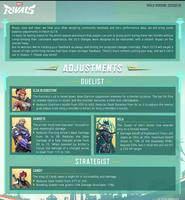

An anonymous reader quotes a report from the Washington Post: David Greene had never heard of NotebookLM, Google's buzzy artificial intelligence tool that spins up podcasts on demand, until a former colleague emailed him to ask if he'd lent it his voice. "So... I'm probably the 148th person to ask this, but did you license your voice to Google?" the former co-worker asked in a fall 2024 email. "It sounds very much like you!"
Greene, a public radio veteran who has hosted NPR's "Morning Edition" and KCRW's political podcast "Left, Right & Center," looked up the tool, listening to the two virtual co-hosts -- one male and one female -- engage in light banter. "I was, like, completely freaked out," Greene said. "It's this eerie moment where you feel like you're listening to yourself." Greene felt the male voice sounded just like him -- from the cadence and intonation to the occasional "uhhs" and "likes" that Greene had worked over the years to minimize but never eliminated. He said he played it for his wife and her eyes popped.
As emails and texts rolled in from friends, family members and co-workers, asking if the AI podcast voice was his, Greene became convinced he'd been ripped off. Now he's suing Google, alleging that it violated his rights by building a product that replicated his voice without payment or permission, giving users the power to make it say things Greene would never say. Google told The Washington Post in a statement on Thursday that NotebookLM's male podcast voice has nothing to do with Greene. Now a Santa Clara County, California, court may be asked to determine whether the resemblance is uncanny enough that ordinary people hearing the voice would assume it's his -- and if so, what to do about it. Greene's lawsuit cites an unnamed AI forensic firm that used its software to compare the artificial voice to Greene's. It gave a confidence rating of 53-60% that Greene's voice was used to train the model, which it considers "relatively high" confidence.
"If I was David Greene I would be upset, not just because they stole my voice," but because they used it to make the podcasting equivalent of AI "slop," said Mike Pesca, host of "The Gist" podcast and a former colleague of Greene's at NPR. "They have banter, but it's very surface-level, un-insightful banter, and they're always saying, 'Yeah, that's so interesting.' It's really bad, because what do we as show hosts have except our taste in commentary and pointing our audience to that which is interesting?"
Read more of this story at Slashdot.
A proposal within the Fedora Linux community suggests improving the kernel's DRM Panic screen to a more user-friendly, BSOD-style experience. Phoronix reports: Open-source developer Jose Exposito proposed today a nicer experience for DRM Panic integration on Fedora. Rather than using DRM Panic with just the kernel log contents being encoded in the QR code displayed when a kernel panic occurs, the proposal is to have a customized Fedora web-page with the encoded QR contents to be shown on that web page. Besides having a more pleasant UI/UX, from this web page the intent would also be to make it easier to report this error to the Fedora BugZilla. Being able to easily pass the kernel log to the Fedora bug tracker could help in making upstream aware of the problem(s) and seeing if other users are also encountering similar panics.
Right now this idea was just raised earlier today as a "request for comments" on the Fedora mailing list. While a prototype at this point, Exposito already developed a basic web interface for demoing the solution.
Read more of this story at Slashdot.
Residents of Potters Bar, a small town just north of London, are trying to block what would be one of Europe's largest data centers from being built on 85 acres of rolling farmland that separates their community from the neighboring village of South Mimms. Multinational operator Equinix acquired the land last October after the local council granted planning permission in January 2025, and the company intends to break ground this year on a development it estimates will cost more than $5 billion.
The UK government's decision to classify data centers as "critical national infrastructure" and a new "gray belt" land designation that loosens building restrictions on underperforming greenbelt parcels helped clear the path for approval -- even though objections from locals outweighed signatures of support by nearly two-to-one during the public consultation. A protest group of more than 1,000 residents has since appealed to a third-party ombudsman and the UK's Office of Environmental Protection, but has so far failed to overturn the decision.
Read more of this story at Slashdot.
Microsoft AI CEO Mustafa Suleyman expects "human-level performance on most, if not all professional tasks" from AI, and believes most work involving "sitting down at a computer" -- accounting, legal, marketing, project management -- will be fully automated within the next year or 18 months. He pointed to exponential growth in computational power and predicted that creating a new AI model will soon be as easy as "creating a podcast or writing a blog."
Read more of this story at Slashdot.
Britain has lost more than 14,000 pubs since 2009, a decline from roughly 54,000 registered public houses and bars to under 40,000 by 2022, according to a new analysis of UK business register data by data analyst Lauren Leek. The North East, North West, Yorkshire and the Midlands lost 25 to 30% of their stock; London saw the smallest decline.
Leek trained a random forest model on 49,840 pubs and found spatial isolation -- how far a pub stood from its nearest neighbour -- was the single strongest predictor of closure. Median nearest-neighbour distance for surviving pubs is roughly 280 metres; for closed pubs, 640 metres. Each closure pushes remaining pubs further into isolation, a dynamic Leek calls a "spatial death spiral."
Much of that isolation traces to ownership. Stonegate, Britain's largest pub company and a holding of PE firm TDR Capital, carries over $4 billion in debt from its 2019 leveraged acquisition of Ei Group. PE-backed and overseas-owned companies now control roughly a quarter to a third of all British pubs.
Read more of this story at Slashdot.
Mark Fischbach, the YouTube creator known as Markiplier who has spent nearly 15 years building an audience of more than 38 million subscribers by playing indie-horror video games on camera, has pulled off something that most independent filmmakers never manage -- a self-financed, self-distributed debut feature that has grossed more than $30 million domestically against a $3 million budget.
Iron Lung, a 127-minute sci-fi adaptation of a video game Fischbach wrote, directed, starred in, and edited himself, opened to $18.3 million in its first weekend and has since doubled that figure worldwide in just two weeks, nearly matching the $19.1 million debut of Send Help, a $40 million thriller from Disney-owned 20th Century Studios. Fischbach declined deals from traditional distributors and instead spent months booking theaters privately, encouraging fans to reserve tickets online; when prospective viewers found the film wasn't screening in their city, they called local cinemas to request it, eventually landing Iron Lung on more than 3,000 screens across North America -- all without a single paid media campaign.
Read more of this story at Slashdot.
0
An anonymous reader shares a report: A moderator on diyAudio set up an experiment to determine whether listeners could differentiate between audio run through pro audio copper wire, a banana, and wet mud. Spoiler alert: the results indicated that users were unable to accurately distinguish between these different 'interfaces.'
Pano, the moderator who built the experiment, invited other members on the forum to listen to various sound clips with four different versions: one taken from the original CD file, with the three others recorded through 180cm of pro audio copper wire, via 20cm of wet mud, through 120cm of old microphone cable soldered to US pennies, and via a 13cm banana, and 120cm of the same setup as earlier.
Initial test results showed that it's extremely difficult for listeners to correctly pick out which audio track used which wiring setup. "The amazing thing is how much alike these files sound. The mud should sound perfectly awful, but it doesn't," Pano said. "All of the re-recordings should be obvious, but they aren't."
Read more of this story at Slashdot.
Longtime Slashdot reader walterbyrd shares a report from ABC News: In a study of nearly 28 million older Americans, long-term exposure to fine particle air pollution raised the risk of Alzheimer's disease. That link held even after researchers accounted for common conditions like high blood pressure, stroke and depression. Fine particle air pollution, known as PM2.5, consists of tiny particles in the air that come from car exhaust, power plants, wildfires, and burning fuels, according to the American Lung Association. They are small enough to travel deep into the lungs and even reach the bloodstream.
The research, conducted at Emory University and published in PLOS Medicine, tracked health data over nearly two decades to explore whether air pollution harms the brain indirectly by causing high blood pressure or heart disease, which, in turn, leads to dementia. However, these "middleman" conditions accounted for less than 5% of the connection between pollution and Alzheimer's, the research found. The researchers say this suggests that over 95% of the Alzheimer's risk comes from the direct impact of breathing in dirty air, likely through inflammation or damage to brain cells. "The relationship between PM2.5 and AD [Alzheimer's disease] has been shown to be pretty much linear," said Kyle Steenland, a professor in the departments of environmental health and epidemiology at the Rollins School of Public Health at Emory University, and senior author of the study. "The reason this is particularly important is that PM2.5 is known to be associated with high blood pressure, stroke and depression -- all of which are associated with AD. So, from a prevention standpoint, simply treating these diseases will not get rid of the problem. We have to address exposure to PM2.5."
Read more of this story at Slashdot.
An anonymous reader quotes a report from the Associated Press: Agrochemical maker Bayer and attorneys for cancer patients announced a proposed $7.25 billion settlement Tuesday to resolve thousands of U.S. lawsuits alleging the company failed to warn people that its popular weedkiller Roundup could cause cancer. The proposed settlement comes as the U.S. Supreme Court is preparing to hear arguments in April on Bayer's assertion that the U.S. Environmental Protection Agency's approval of Roundup without a cancer warning should invalidate claims filed in state courts. That case would not be affected by the proposed settlement.
But the settlement would eliminate some of the risk from an eventual Supreme Court ruling. Patients would be assured of receiving settlement money even if the Supreme Court rules in Bayer's favor. And Bayer would be protected from potentially larger costs if the high court rules against it. Germany-based Bayer, which acquired Roundup maker Monsanto in 2018, disputes the assertion that Roundup's key ingredient, glyphosate, can cause non-Hodgkin lymphoma. But the company has warned that mounting legal costs are threatening its ability to continue selling the product in U.S. agricultural markets. "Litigation uncertainly has plagued the company for years, and this settlement gives the company a road to closure," Bayer CEO Bill Anderson said Tuesday. The proposed settlement could total up to $7.25 billion over 21 years and resolve most of the remaining U.S. lawsuits surrounding the cancer-related harms of Roundup. The report notes that more than 125,000 claims have been filed since 2015, and while many have already been settled, this deal aims to cover most outstanding and future claims tied to past exposure.
Individual payouts would vary widely based on exposure type, age at diagnosis, and cancer severity. Bayer can also cancel the deal if too many plaintiffs opt out.
Read more of this story at Slashdot.
According to Bloomberg's Mark Gurman (paywalled), Apple is reportedly developing AI-powered smart glasses, a wearable pendant, and camera-equipped AirPods that connect to the iPhone and use "visual context" to let Siri perform real-world actions. The Verge reports: Apple is reportedly aiming to start production of its smart glasses in December, ahead of a 2027 launch. The new device will compete directly with Meta's lineup of smart glasses and is rumored to feature speakers, microphones, and a high-resolution camera for taking photos and videos, in addition to another lens designed to enable AI-powered features.
The glasses won't have a built-in display, but they will allow users to make phone calls, interact with Siri, play music, and "take actions based on surroundings," such as asking about the ingredients in a meal, according to Bloomberg. Apple's smart glasses could also help users identify what they're seeing, reference landmarks when offering directions, and remind wearers to complete a task in specific situations, Bloomberg reports.
The company is reportedly planning to develop the frames for the smart glasses in-house, instead of partnering with a third-party company like Meta does with Ray-Ban and Oakley. Prototypes of the glasses use a cable to connect to a battery pack and an iPhone, but Bloomberg reports that "newer versions have the components embedded in the frame." Apple reportedly wants to make its smart glasses stand out by offering a high-quality build and advanced camera technology. The company is still working on AI-powered smart glasses with a display, though their launch "remains many years away," Bloomberg says.
Apple's plans for AI hardware don't end there, as the company is expected to build upon its Google Gemini-powered Siri upgrade with an AirTag-sized AI pendant that people can either wear as a necklace or a pin. This device would "essentially serve as an always-on camera" for the iPhone and has a microphone for prompting Siri, Bloomberg reports. The pendant, which The Information first reported on last month, is rumored to come with a built-in chip, but will mainly rely on the iPhone's processing power. The device could arrive as early as next year, according to Bloomberg.
Read more of this story at Slashdot.
Following backlash over Discord's global rollout of strict age-verification checks, users are flocking to rival platform TeamSpeak and overwhelming its servers. According to PC Gamer, the Discord alternative said its hosting capacity has been maxed out in a number of regions including the U.S. From the report: [A]s I saw for myself while testing out free Discord alternatives, it's hard to deny the appeal of TeamSpeak. It's quick and easy to make an account, join or start a group chat, or join a massive, game-based community voice server, and at no point does TeamSpeak cheekily ask if it can scan your wizened visage.
During my testing, I was able to dive into 18+ group chats without tripping over an age gate. However, there's no guarantee TeamSpeak won't have to deploy its own age verification mechanism in the future. In the UK at least, the Online Safety Act makes those sorts of checks a legal obligation, with Prime Minister Keir Starmer recently stating "No social media platform should get a free pass when it comes to protecting our kids."
Besides all of that, if you'd rather not chat to randoms who also happen to have an unhealthy obsession with Arc Raiders, you'll likely need to pay an admittedly small subscription fee to rent your own ten-person community voice server. By that point, you're handing over card details and essentially fulfilling an age assurance check anyway. If you'd rather limit how much info your chat platform of choice has about you, there are arguably better options out there.
Read more of this story at Slashdot.
Longtime Slashdot reader jrepin writes: KDE Plasma is a popular desktop (and mobile too) environment for GNU/Linux and other UNIX-like operating systems. Among other things, it also powers the desktop mode of the Steam Deck gaming handheld. The KDE community today announced the latest release: Plasma 6.6.
In this new major release, Spectacle can recognize texts from screenshots, a new on-screen keyboard and new login manager are available for testing, and a first-time wizard Plasma Setup was added. Your current theme can be saved as a new global theme, which can also be used for the day and night theme-switching feature. Emoji selector got a new easier way to select skin tone. If your computer has a camera available, you can now connect to a Wi-Fi network by scanning a QR code. Application sound volume can now be changed by scrolling over an application taskbar button via mouse wheel. When screencasting and sharing your desktop, you can now filter windows so they are not shared. A setting was added to enable having virtual desktops only on the primary screen. If your device has an ambient light sensor, you can enable automatic screen brightness adjustment. Game controllers can now be used as regular input devices.
For complete list of new features and changes, check out the KDE Plasma 6.6 release announcement and the complete changelog.
Read more of this story at Slashdot.
An anonymous reader quotes a report from Ars Technica: More than two years after Broadcom took over VMware, the virtualization company's customers are still grappling with higher prices, uncertainty, and the challenges of reducing vendor lock-in. Today, CloudBolt Software released a report, "The Mass Exodus That Never Was: The Squeeze Is Just Beginning," that provides insight into those struggles. CloudBolt is a hybrid cloud management platform provider that aims to identify VMware customers' pain points so it can sell them relevant solutions. In the report, CloudBolt said it surveyed 302 IT decision-makers (director-level or higher) at North American companies with at least 1,000 employees in January. The survey is far from comprehensive, but it offers a look at the obstacles these users face.
Broadcom closed its VMware acquisition in November 2023, and last month, 88 percent of survey respondents still described the change as "disruptive." Per the survey, the most cited drivers of disruption were price increases (named by 89 percent of respondents), followed by uncertainty about Broadcom's plans (85 percent), support quality concerns (78 percent), Broadcom shifting VMware from perpetual licenses to subscriptions (72 percent), changes to VMware's partner program (68 percent), and the forced bundling of products (65 percent).
When Broadcom bought VMware, some customers shared horror stories about receiving quotes that showed prices increasing by as much as 1,000 percent. CloudBolt's survey paints a more modest picture. Fourteen percent of respondents said their VMware costs have at least doubled, while 12 percent reported increases of 50-99 percent, 33 percent reported increases of 24-49 percent, and 31 percent reported increases of less than 25 percent. Despite survey participants suggesting smaller price hikes than originally anticipated under Broadcom, companies are still struggling with the pricing changes. Eighty-five percent are concerned that VMware will become even more expensive, according to CloudBolt's survey. [...]
CloudBolt's survey also examined how respondents are migrating workloads off of VMware. Currently, 36 percent of participants said they migrated 1-24 percent of their environment off of VMware. Another 32 percent said that they have migrated 25-49 percent; 10 percent said that they've migrated 50-74 percent of workloads; and 2 percent have migrated 75 percent or more of workloads. Five percent of respondents said that they have not migrated from VMware at all. Among migrated workloads, 72 percent moved to public cloud infrastructure as a service, followed by Microsoft's Hyper-V/Azure stack (43 percent of respondents). Overall, 86 percent of respondents "are actively reducing their VMware footprint," CloudBolt's report said.
Read more of this story at Slashdot.
A US law firm has accused Lenovo of violating Justice Department strictures about the bulk transfer of data to foreign adversaries, namely China. From a report: The case filed by Almeida Law Group on behalf of San Francisco-based "Spencer Christy, individually and on behalf of all others similarly situated" centers on the Data Security Program regulations implemented by the DOJ last year. According to the suit, these were "implemented to prevent adversarial countries from acquiring large quantities of behavioral data which could be used to surveil, analyze, or exploit American citizens' behavior."
The complaint states the DOJ rule "makes clear that sending American consumers' information to Chinese entities through automated advertising systems and associated databases with the requisite controls is prohibited." The case states the threshold for "covered personal identifiers" is 100,000 US persons or more and lists a range of potential identifiers, from government and financial account numbers to IMEIs, MAC, and SIM numbers, demographic data, and advertising IDs.
Read more of this story at Slashdot.
Anthropic has released Claude Sonnet 4.6, the first upgrade to its mid-tier AI model since version 4.5 arrived in September 2025. The new model features a "1M token context window" and delivers a "full upgrade of the model's skills across coding, computer use, long-context reasoning, agent planning, knowledge work, and design." From Anthropic: Sonnet 4.6 brings much-improved coding skills to more of our users. Improvements in consistency, instruction following, and more have made developers with early access prefer Sonnet 4.6 to its predecessor by a wide margin. They often even prefer it to our smartest model from November 2025, Claude Opus 4.5.
Performance that would have previously required reaching for an Opus-class model -- including on real-world, economically valuable office tasks -- is now available with Sonnet 4.6. The model also shows a major improvement in computer use skills compared to prior Sonnet models. The free tier now uses Sonnet 4.6 by default and with "file creation, connectors, skills, and compaction" included.
Read more of this story at Slashdot.
David Singleton / flurries of latent creativity : Dreamer, founded by former Stripe CTO David Singleton, Hugo Barra, and others, launches in beta to let technical and non-technical users build agentic AI apps — Dreamer is the name of the platform and company I started with Hugo, Nicholas and others a little over a year ago.
Bloomberg : A look at MGX, Abu Dhabi's AI investment vehicle with stakes in Anthropic, xAI, and OpenAI; the firm plans to spend up to $10B annually over the next few years — Government-backed AI investor MGX has a bullish plan to spend up to $10 billion annually over the next few years.
The Economic Times : Bengaluru-based Stable Money, whose app lets users invest in fixed deposits and corporate bonds, raised $25M at a $175M valuation, taking total funding to $65M — The startup plans to grow its overall business five times by the end of this year, enter new cities through physical expansion …
George Hammond / Financial Times : Sources: Ineffable Intelligence, founded by Google DeepMind's former principal scientist David Silver, is raising a $1B seed led by Sequoia at a $4B valuation — Sequoia Capital leading funding deal for David Silver's start-up Ineffable Intelligence at $4bn valuation
Dylan Butts / CNBC : Nvidia says it is working with Peak XV and other VC firms in India to fund AI startups; over 4,000 Indian AI startups have joined its global startup program — American AI chip darling Nvidia is expanding its partnerships in India, including with venture capital firms …
Himanshi Lohchab / The Economic Times : Yotta says it is investing $2B to deploy Nvidia's Blackwell B300 GPUs at its Noida data center campus in India to create one of Asia's largest AI superclusters — Yotta Data Services is investing $2 billion to install Nvidia's latest AI chips at its Noida hyperscale data centre, going live by August.
Cristina Criddle / Financial Times : Perplexity says it has no plans to further pursue ads, which it introduced in 2024, after phasing them out late last year over fears they would erode user trust — Leading start-ups have recently embraced sponsors as they search for revenue — AI start-up Perplexity has abandoned advertising …
Rachel Swan / San Francisco Chronicle : Tesla agrees to stop using the term “autopilot” to market its electric vehicles in California to avoid a 30-day suspension by the state's DMV — Tesla has stopped using the term “autopilot” to market its electric vehicles in California in order to avoid a 30-day suspension by the Department of Motor Vehicles.
Ben Schoon / 9to5Google : YouTube services are fully resolved after a brief outage starting at ~7:45pm ET due to a recommendations system issue — If you're trying to access YouTube right now and running into problems, you're not alone, as a widespread outage appears to be affecting YouTube and, to a lesser extent, YouTube TV.
The Information : Anthropic expects to pay Amazon, Google, and Microsoft $80B+ total to run its models on their servers through 2029, plus an additional $100B for training costs — Anthropic expects to pay Amazon, Google and Microsoft at least $80 billion to run its Claude AI on their cloud servers through 2029 …
TechCrunch : Emergent, which offers an AI-powered software development service, says it is generating annual run-rate revenue of $100M+, just eight months after launch — Indian vibe-coding platform Emergent was launched just eight months ago, and it now says it's generating annual run-rate revenue …
Annie Palmer / CNBC : Amazon shares close up 1.2%, snapping a nine-day slide that wiped out $450B+ in market valuation over concerns about Amazon's plan to spend $200B in 2026 capex — Amazon shares closed up more than 1% on Tuesday, snapping a nine-day slide that shaved billions off of its market cap.
Ian King / Bloomberg : Filing: Nvidia unloaded 1.1M Arm shares, worth about $140M based on Arm's closing price on Tuesday, sometime in Q4, bringing Nvidia's stake to zero — Nvidia Corp. sold off the last of its stake in Arm Holdings Plc, a chip technology company that it tried and failed to acquire five years ago.
Lauren Rosenthal / Bloomberg : Google signs a power purchase agreement with Ormat to supply up to 150 MW of geothermal energy to its Nevada data centers through NV Energy starting in 2028 — Alphabet Inc.'s Google plans to draw on geothermal power from renewable energy company Ormat Technologies to help fuel its fleet of data centers in Nevada.
Anthony Hughes / Bloomberg : Sources: Western Digital plans to raise $3.09B by selling a Sandisk stake at $535-$555/share, a 9.4% discount to Tuesday's close; the offering is oversubscribed — Western Digital Corp. is seeking to raise $3.09 billion from the sale of a stake in Sandisk Corp., after the digital storage company spun off …